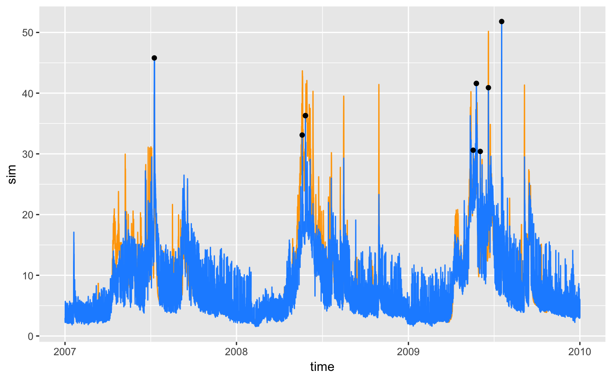
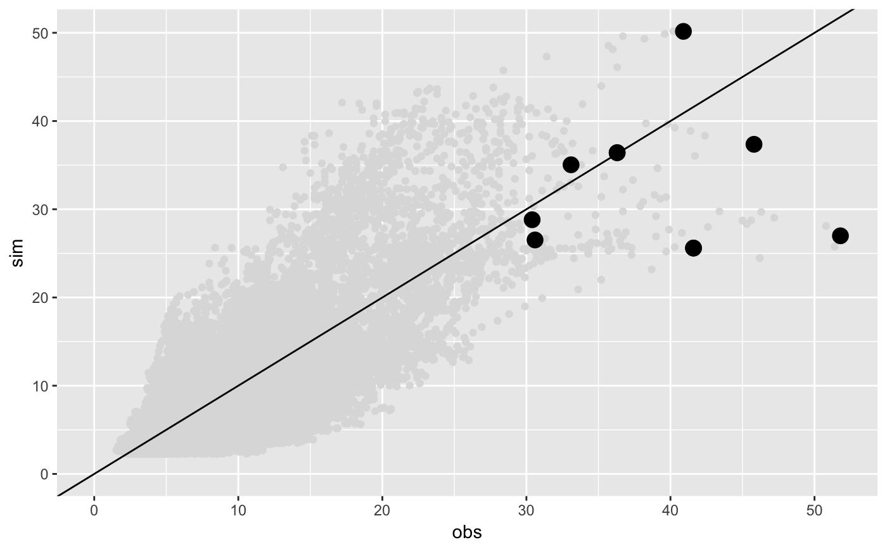
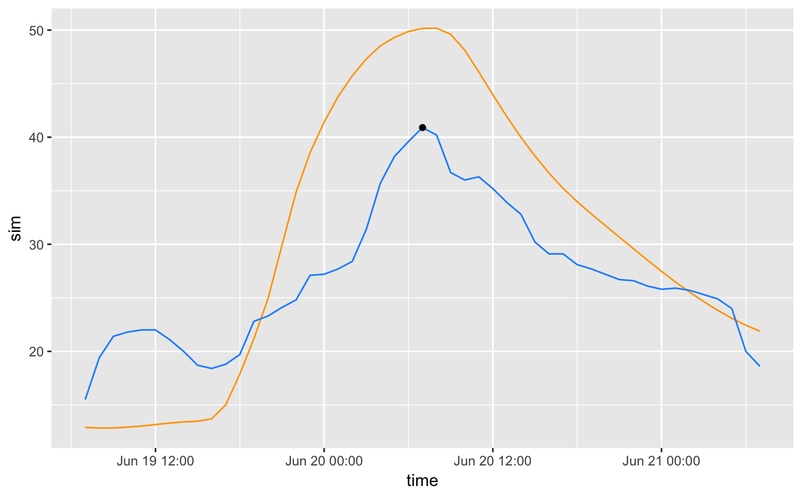

02_peacks.RmdThe function peack lets users explore the highest events in among the available basins. It provides a list of ggplot2 plots, containing an overview plot (overview), a scatter plot (scatter) and detail plots of the individual events (event_plot). Instead of explaining the properties of each plot in detail it is best to get an intuition of the function by looking at some examples.
For the examples 10 events are extracted from a runoff example
library(coscos)
library(visCOS)## Warning: replacing previous import 'lazyeval::is_formula' by
## 'purrr::is_formula' when loading 'visCOS'## Warning: replacing previous import 'lazyeval::is_atomic' by
## 'purrr::is_atomic' when loading 'visCOS'## Warning: replacing previous import 'magrittr::set_names' by
## 'purrr::set_names' when loading 'visCOS'## Warning: replacing previous import 'dplyr::last' by 'xts::last' when
## loading 'visCOS'## Warning: replacing previous import 'dplyr::first' by 'xts::first' when
## loading 'visCOS'## Warning: replacing previous import 'purrr::set_names' by
## 'magrittr::set_names' when loading 'visCOS' cosdata <- viscos_example()
peakplots <- peack(cosdata, action = "plots", n_events = 10L)## Lade nötiges Paket: magrittr## Lade nötiges Paket: pastaThe peakplots list does now contain plots for each basin within the cosdata data.frame:
names(peakplots)## [1] "basin0001" "basin0002"For each basin the a set of plots (overview,scatter,event_plot) are saved within a list for each basin. In the following the plots for basin 1 are shown:
names(peakplots$basin0001)## [1] "overview" "scatter" "event_plot1" "event_plot2"
## [5] "event_plot3" "event_plot4" "event_plot5" "event_plot6"
## [9] "event_plot7" "event_plot8" "event_plot9" "event_plot10"The overview plot shows the entire time series of data1 and data2 of the basin. The found events are marked with black dots. The overview plot for basin 1 is:
peakplots$basin0001$overview
The scatter plot shows the found events within a scatter plot, where data1 is the x-axis and data2 on the y-axis. In the following an example for basin 1 is given.
peakplots$basin0001$scatter
Detail plots for each of the found events are given in form of the event_plot objects. Here an example:
peakplots$basin0001$event_plot5